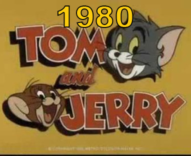
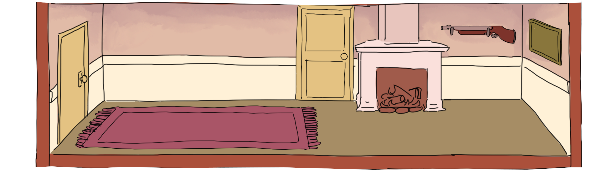

Tom and Jerry was originally created by William Hanna and Joseph Barbera produced by MGM. The first short was released in 1940 where Tom and Jerry were originally called Jasper and Jinx. Tom and Jerry is all about the classic chase formula. Almost every short has Jerry triggering Tom causing a chase scene with all sorts of slapstick shenanigansAround the year 1954 the budget for Tom and Jerry got halved which caused a drop in animation quality. in 1957, after producing a total of 114 shorts the animation studio got shut down due to more budget cuts.
Starting in 1961 MGM outsourced animation for Tom and Jerry to an animation studio ran by Gene Deitch. Due to the studio being based behind the iron curtain, the animators didn't have a great understanding of the American humor used in the shorts. Gene Deitch tried to use roughly the same style for the animation but due to budget the quality was lower than its predecessor.
After Gene Deitch' contract ended in 1962, MGM decided to bring the animation for Tom and Jerry back to American soil. In 1963 Chuck Jones started work on Tom and Jerry. Chuck Jones was previously known for his work on Bugs Bunny, Daffy Duck and Proky Pig. Chuck Jones had a very distinct animation style which changed the way Tom and Jerry looked.
In 1975 Tom and Jerry returned to it's original creators Hanna and Barbera with a new set of shorts called "The Tom and Jerry Show". The original animation style returned with some minor changes the the character's designs. Their dynamic however, changed. Due to the show being aimed at younger audiences, most violence was removed and Tom and Jerry were friends instead of enemies.

in 1980 "The Tom and Jerry Comedy Show" was released. This show was animated by Filmation who were more focused on quantity over quality. They often reused animations, used lower frame rates and their scores were more simple. This show was wildly disliked amongst fans.

After several single releases of movies and shorts Hanna Barbera released their last movie "Tom and Jerry The Mansion Cat" in 2001 before getting passed on to Warner Brothers which happened only ten days after the death of William Hanna. Warner Bros continued to release shows like "Tom and Jerry Tales" in 2006 and the "Tom and Jerry Show" which started in 2014 which had a total of 117 episodes. In 2021 Warner Bros released a live action/3d animated movie of Tom and Jerry.